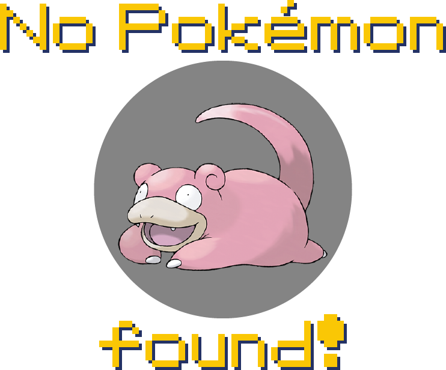

What is this? This is a project that I created to showcase my skills in API consumption for educational purposes.
Why is this Pokédex only showing Generation VI Pokémon? Besides the fact that I really like the designs, Gen VI Dex is the smallest one (with only 72 new mons) and thus it would require less API calls to fill the page.
Will you put more generations? Not really. It's not this project goal to become a full Pokédex, so it would be meaningless to include more. Besides, we have websites like Bulbapedia and Serebii with plenty of info.
Are you pretending to be asked questions just to explain this project? ... No, what do you mean?
Ok, then. Who are you? My name is João, I'm a Dev and you can find more about me in my portfolio over here.
The Pokédex from the main logo was based on the one from Free ICONS Library, while the background was based on the background used by Pokédex Tracker website.
Pokémon and All Respective Names are Trademark & © of Nintendo/Creatures Inc./GAME FREAK inc. 1995-